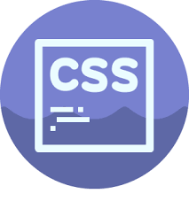

Background-attachment
Петров П. П. | 13.09.2019
Свойство background-attachment устанавливает, будет ли прокручиваться фоновое изображение вместе с содержимым элемента. Изображение может быть зафиксировано и оставаться неподвижным, либо перемещаться совместно с документом. В CSS3 можно указать несколько значений для ряда фоновых изображений, перечисляя значения через запятую.